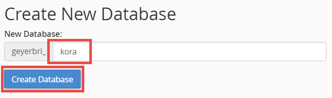
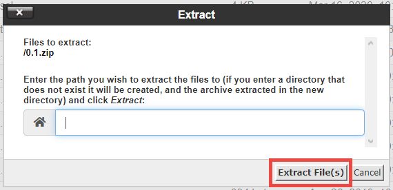
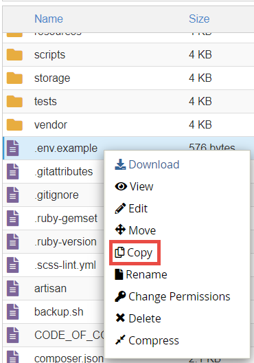
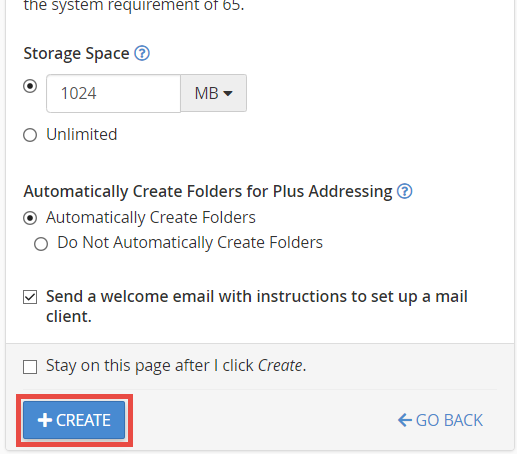

Installing Kora on Domain of One's Own and Reclaim Hosting
This is a basic guide for installing Kora in a Reclaim Hosting-based server environment, which includes any Domain of One's Own services offered by institutions. A few things about this guide. First, in many cases of naming something or writing Terminal commands, things will be case sensitive, so unless the specific instance requires uppercase for something, this guide will always use lowercase and its author strongly suggests you do the same. Keeping things all lowercase is a good thing to follow for best practices because it removes any doubt or confusion over whether some file, directory, or URL should have uppercase letters in it.
Second, a note about terminology. To keep things consistent, this guide will be using the word "directory" and its derivatives throughout this guide, rather than "folder" in order to better illuminate the link between URL and file structure throughout this process.
Finally, make sure to visit the Kora GitHub repo releases to download the zip file containing the most recent Kora release.
Log In to cPanel
Begin all of this by logging into your account to reach your cPanel. Most cPanels look something like this:
Set up MySQL Database
-
After reaching the cPanel for your server environment, begin by setting up the necessary MySQL Database for your Kora installation. Start by finding the section called "Databases" and clicking on "MySQL Databases".

-
Under "Create new Database," enter "kora" or some other name in the text field and click "Create Database."

-
Take note of the auto-generated prefix, which, when combined with whatever you just provided, will be the name of your MySQL database. In this example case it is called
geyerbri_kora. Once you've noted this database name, click on the link to take you back to the previous page.
-
Next, scroll down to "MySQL Users" and provide the username "kora" in the text box under "Add New User". This is a common practice - the database and the default user for that database having the same name - which will make it easier to update configurations elsewhere. After this, click on the button "Password Generator."

-
The Password Generator modal will open and generate a random string of characters (blocked out in the image below).
IMPORTANT: Copy this password to somewhere for safe-keeping. You will need it later for configuration of your Kora installation.
After copying this password to somewhere, click "Use Password."
-
When the modal closes, the generated password will auto-fill into the "Add New User" section and it should rate the password as "Very Strong." Click on "Create User" to complete this process.

Just as you did with the database name, take note of this username, as you will need it for Kora configuration elsewhere. Because this guide follows the common practice of using the same name for the database and user, this example username is also
geyerbri_kora.Click the back link to get back to the previous page.
-
The final step in setting up the required MySQL database is to assign the newly-created user to the newly-created database and give that user full permissions. Do this by first scrolling down to "Add User To Database", confirming that the names are correctly chosen, and clicking on "Add."

-
The page that opens will provide a list of permissions that can be assigned to the chosen user for the specified database. Click the checkbox for "ALL PRIVILEGES."
Scroll down if needed to find the "Make Changes" box. Clicking on it will generate an in-page notification that it was successful. Click on the "Go Back" link to get back to the main "MySQL Databases" page.

-
To confirm that you have successfully created the database, created the user, and added the user to the database, find the section "Current Databases" and check that there is an entry for your new database, with your new user listed as a privileged user.

Return to cPanel Main
To return from nearly any part of cPanel to the Main interface (shown in the screenshot at the beginning of this guide), you can click on the grid icon in the upper-left.
Upload and Prepare Kora Application Files via cPanel File Manager
-
From cPanel Main, find the section "Files" and click on "File Manager."
-
Take a note of which directory is your main URL directory (the one that provides all the files available via your main URL). In this screenshot you can see the globe icon being used for the URL directory "public_html," which is the common icon in this version of cPanel and used in MSU's Domain of One's Own.
You will also notice the same globe icon, but with a black chain-link icon over it, used for "www".

This is something different, which will be explained in one of the sections about setting up the installation URL below. But for now just know that the directory with the globe and without the chain-link is the one you need to make note of.
-
In order to properly view all the relevant Kora installation files once they have been created, it is important for you to make all the hidden files visible. To do this, go to the File Manager's "Settings" by clicking on the gear icon in the upper-right.
Click the checkbox for "Show Hidden Files (dotfiles)" and then click "Save".
-
Next, you'll upload the kora installation .zip file you downloaded earlier from Kora's GitHub repo releases page. Kora is intended to be installed outside of the main URL directory you noted in Step 2 of this section; the easiest is to install it into the same directory alongside your main URL directory. If you have never changed the default directory that loads when opening File Manager, you are more than likely already viewing the correct location.
While at this location, click on "Upload" in the menu at the top.
In the page that opens, just drag-and-drop the .zip file to upload it. You may also click on "Select File" to find it via your computer's file management windows. When the .zip file finishes uploading, click on the link leading back to File Manager.
-
Locate the uploaded .zip file in this directory, right-click it to bring up the context menu, and select "Extract."
In the Extract modal that opens, leave the default location alone (the text box is likely blank) and click "Extract File(s)."

In the follow-up modal called "Extraction Results," click "Close."
-
Extracting the .zip file will create a new directory, which is likely called "kora-XXX," with the version number in the placeholder. Locate this directory, right-click on it, and select "Rename."
In the Rename modal that opens, change the text in the box to "kora" (without quotations) and click "Rename File."
-
Next, it's time to initially set up the .env file that manages some of the configuration settings for your Kora install. Many of the settings in this file will be adjustable once the installation is complete, but a few are not and require configuration now.
Enter your renamed "kora" directory, right-click on the ".env.example" file, and select "Copy."
 In the Copy modal that opens, add "/.env" without quotations to whatever is already in the text box and click "Copy File(s)."
-
Once the file has been renamed, select it and then click on "Edit" in the menu at the top.
The Edit modal that opens provides a warning to back up the file you are about to edit before making any changes. This is always a good practice to follow, so that any mistakes can be quickly and easily rectified. Luckily, since the file you are about to edit is a direct copy of ".env.example," you already have a backed-up copy of its current state, so in this case making an additional backup is not necessary. So go ahead and click on "Edit."
A new tab will open with the editor. Here, change lines 6, 7, and 8 to match the info you saved about your MySQL database. For example, given the info previously saved from the database setup before, this guide's example code would look like:
DB_DATABASE=geyerbri_kora DB_USERNAME=geyerbri_kora DB_PASSWORD={saved database user password}Notice, this is where you will paste in the database password you saved in Step 5 of Set Up MySQL Database above. Remove the curl brackets from the example code and make sure there are no spaces before or after the password.
After finishing this, click "Save Changes". Once that's done you can either close the tab or click "Close" (which does the same thing) and go back to the File Manager tab.
-
Finally, there is one more example file to copy as a configuration file. Enter the directory "public" and also copy the file ".htaccess.example". Add "/.htaccess" after the defaulted location, the same way you did for ".env" in the previous step. The default settings in this file will work for basic installations of Kora, but should you want to adjust settings such as more complex URLs than what this guide presents (see "Create Kora Installation URLs"" below), or to change the advanced settings such as acceptable file sizes, memory limits, timeout lengths, etc., they are controlled in this file.
Once copied, you're finished with the initial file setup. Navigate back to cPanel Main.
Kora Installation and Further Configuration via cPanel Terminal
-
In cPanel Main, scroll down to the section called "Advanced" and open "Terminal."
Read and (hopefully) accept the terms to reach the in-cPanel terminal interface. It will look like this:
-
In Terminal, you will be using some basic commands to move around and change a few things. The first one is
cd, which just changes your location in the file system. Change your directory to whichever directory you just renamed the extracted zip file to. If you've been using the suggested names above, this will be "kora":cd koraNext, run the installation process:
php artisan kora:installBefore running this last command, the window will look like this:
After running, if it is successful, the window will look like this, with the successful installation message (in green):
-
INCREDIBLY IMPORTANT: You must copy the last line generated here in the successful installation message (outlined above), which has your password for the generated username of "admin". To copy things in cPanel's Terminal, first use your mouse to select the line, then right-click and select "Copy." Paste this somewhere safe, where you will not lose it! It cannot be stressed enough how important this step is, because losing this password means losing access to your installation.
-
Notice that, in the successful installation message, you are directed to "give READ access to the web user," as well as "WRITE access" for specific directories, to ensure that Kora continues functioning properly after users start contributing. What these directions require could be different for different Domain of One's Own environments, because different system administrators may have set up the default permissions for the environment differently. For now, to ensure that things are set up for the most likely scenario for most Domain of One's Own or Reclaim Hosting environments, you will be setting file permissions for the entire "kora" directory and its contents.
Because these commands have to be applied to all the files and directories within, you will have to do this here, via Terminal, using the
chmodcommand and the-Rflag.chmodstands for "change mode," which is how the server's operating system refers to changing permissions. The-Rflag tells the command to run recursively, i.e. change them for this directory and everything it contains. Finally, the.is the short-hand for "my current location."This first command is to make sure that any new files and directories created in Kora are assigned the correct permissions in the future. It may not be needed for most cases, but in the few cases where it is, it will be useful. So run the following code:
chmod -R g+s .When successful, Terminal will just re-display the command prompt without a message:
-
Next, it is important to confirm that the directories and files in this installation are all set to the
755permissions level. In the operating system your server is running, this number represents the permissions levels for three different attributes related to a file or directory's ownership in the system. The first number represents the level set for "Owner," the second for "Group," and the third for "Other/World." Setting7is full access - aka read, write, and execute - whereas setting5is read and execute access only. For the purposes of this basic installation, the level for "Owner" should always be set to7so that you will always be able to make changes to things if needed. However the amount of access given to "Group" and "Other/World" attributes will affect the security of your server environment, so it is important to set these to5or some other non-write setting whenever possible.So, to confirm that the installation's permissions are set at the appropriate levels for the appropriate attributes, run this command to set all of this directory and its contents to "READ" (and execute, which is missing from the successful installation message). Again, in many cases it isn't strictly needed, but in the few where it is this will ensure the settings are set correctly:
chmod -R 755 .And just as before, when successful, it will just re-display the command prompt without a message. If you intend to set the "Write" privileges because you are sure your specific server environment's defaults will prevent Kora from working properly, then you can prepare for the commands in the next section by changing your location to be one directory above "Kora". As before, use
cd, but this time use.., which just means 'move up one directory':cd ..Now your terminal will look like this:
Set Write and Execute Privileges On Certain Directories if Needed via cPanel Terminal
For some (such as those installing on MSU's Domain of One's Own at the time this documentation was written), the previous commands will have been enough to complete the required permissions setup for their installation. However for others, it will be necessary to specifically change the permissions on the three directory trees noted in the successful installation message. These settings are different because each server environment may have been set up differently by the systems administrator. The install message's reference to "web user" is in a way referring to this difference: in some cases, things will be set up such that new files that Kora creates will be attempted to be created with the "Owner" attribute/level. In others, the new files will be attempted with the "Group" or (in rare cases) "Other/World" attribute/level.
The specific way your installation works can be tested by quickly creating a record that has a file attached to it, and then uploading that file. If the file upload works, then your current installation does not need any further permissions adjustments. If it does not work, you will need to re-enter cPanel and re-enter Terminal, which should default to the correct location (the directory directly above "kora"). You will need to wait until your Kora installation is completed and properly configured before you can properly conduct this test, but its instructions are repeated below in the section "Test File Permissions"
If the permissions need to be changed, then run the following three commands, using the exact locations described in the successful installation message (reproduced here in case you are coming back to Terminal after learning that your installation requires these settings to work). These will set the "WRITE" (and execute) permissions correctly. Hit "Enter" after each command (i.e. run each on its own).
chmod -R 775 kora/bootstrap/cache/chmod -R 775 kora/storage/chmod -R 775 kora/public/assets/javascripts/production/
Just as before, when successful, each of these will just re-display the command prompt without a message. After you've run all three, your terminal will look something like this:
Create Kora Installation URLs
Next, it is important to have your Kora installation accessible via a web browser and URL. There are two options for doing this: a subdomain or a subdirectory. A subdirectory URL looks like: https://example.org/subdirectory, whereas a subdomain looks like: https://subdomain.example.org. Find the directions for each below.
Subdirectory URL Setup Via cPanel Terminal
-
To set up a subdirectory URL for your Kora installation, you will just have to do a couple more things in Terminal. First you will change your location to be inside of the directory that your main URL is accessible from: in this example case in MSU's Domain of One's Own environment, this is a directory called
public_html. But another common case iswww. Use:cd public_htmlNote: if you receive an error that "public_html" does not exist, more than likely this is because you skipped over a few previous steps that did not pertain to you and so you are currently still inside of the "kora" directory. If this is the case, use
cd ..to move upward, and then again trycd public_html. -
Setting up the subdirectory for your URL requires using the command
lnwith the-sflag.lnstands for "link" and the-sflag tells the system that the link being created is "symbolic". The next part of the command is the location of the Kora installation public directory, relative to your current location. And then the final part is the location of the desired subdirectory that will appear at the end of your site's URL. So in the case of apublic_htmlexample, the public directory of the installation files is located one directory up, and then inside ofkora. So the command is:ln -s ../kora/public koraAfter both of these steps, your terminal window will look something like this:
This was the last bit of Terminal required for setup, so you may now close Terminal and return to cPanel Main.
-
To confirm that the symbolic link process worked, you may go back into File Manager and navigate into your publicly-accessible directory. There, you should find the directory "kora" with the black chain-link icon over the folder icon.
Subdomain URLs
If going this route for your URL, you can now close Terminal and return to cPanel Main.
-
Setting up the subdomain option for your URL requires using the "Subdomains" tool in cPanel, under the "Domains" section.
-
In the Subdomain text box, type what you would like for your URL to begin with, before your site's main URL (remember the example above: https://subdomain.example.org). The selected "Domain" will likely default to your main URL, which is correct (in the case where you have multiple URLs available, choose the appropriate one). And the tool will autogenerate content in the "Document Root" box after you enter something in the "Subdomain" box; delete this autogenerated content and instead enter the directory tree for the public folder of your Kora installation. If you have been using all the same directory names and locations as this guide, then you will enter "kora/public" into this box. Then hit create. You can see all of this in this screenshot:

Enable Force HTTPS for URL
Once you have implemented one of the two methods above, your Kora installation is now reachable via a web browser! But there is one last task you should complete before doing so.
-
Kora is designed to use HTTPS protocol for its URLs. So it is important to set up a Force HTTPS Redirect for your domain, and for the subdomain as well if you have gone that route for your URL. To do this, go to "Domains" under the "Domains" section in cPanel.
-
For your main domain entry and subdomain entry on the list, click the toggle to turn it on (or ensure it is already toggled on for each).
Once completed, return to cPanel Main.
Further Configure Kora Once installed
In a new tab, navigate to your Kora application's URL. If everything has been done correctly, you should land on the login page for your Kora installation. But keep the cPanel open in another tab because you will need to switch back to it to set up your email at some point.
If you successfully reached the Kora login page, Congratulations! Your install is at least partially working!
-
From here you will log into the admin account in order to configure your installation properly, but also to test that your directory permissions settings are working properly.
The username is "admin" and the password is the one that you copied from Terminal, from the successful installation message. Put in that password to log in and you will land on a page that looks like this:
-
It is highly recommended that you at some point click through the introduction to get a quick tutorial on the basics of using Kora. Once done, click on the menu icon in the top-right to bring out the side-bar menu.
Then click on "Management" at the bottom and select "Kora Configuration File" from the options that appear.
This page provides text fields to update much of the information saved in that .env file you briefly edited back in Step 8 of "Upload and Prepare Kora Application Files via cPanel File Manager."
Configure reCAPTCHA
NOTE: Because this subsection regards setting up an external service, there are no screenshots provided.
Kora currently uses reCAPTCHA v2 Checkbox
-
Kora uses Google's reCAPTCHA service for anti-robot protections. As you can see on the screenshot above, the configuration file is asking for a "Recaptcha Private Key" and "Recaptcha Public Key", which you will get from that service. The reCAPTCHA documentation can be found at https://developers.google.com/recaptcha, but to create the keys needed for your site, you will go to https://www.google.com/u/0/recaptcha/admin/. Google will ask you to log in with a Gmail account. Many academic institutions have contracts with Google for using their tools via an educational arrangement; in the case of MSU, it is possible to give Google's login page an MSU email address, which then redirects to an MSU-related login page. Successfully logging in redirects back to reCAPTCHA under the MSU account. If this option is not available to you, unfortunately you will need a Gmail account to gain access to reCAPTCHA, which is required for completing Kora's installation setup.
-
Once logged in, click on the plus icon in the upper-right to register a new site. Give it any label you prefer (a suggestion would be to use your Kora installation URL). As noted above, Kora currently uses reCAPTCHA v2 "I'm not a robot" Checkbox version, so pick those options. Under "Domains", write your main domain (do not include the subdomain or subdirectory) and either hit Enter or click the plus sign to add it to the list of approved domains for the set of keys that are about to be generated. As an aside: this functionality means you could conceivably have multiple Kora installations, or even multiple sites that use reCAPTCHA v2 Checkbox, all using the same keys.
-
The "Owners" section should auto-add your account email, but you can add another if you wish. Be sure to (review and) accept the Terms of Service. The final option is the checkbox for "Send alerts to owners", which you may wish to leave enabled so that you receive emailed updates when security issues with your site arise.
-
Finally, click "Submit". Once redirected back to the main page, the lighter-blue bar at the top will display the number of sites registered and have a dropdown list for you to select whichever. Obviously if this is the first time setting one up, you will only have one. Ensure the one you intend to use is selected in the dropdown and then click on the gear icon in the upper right to go to the reCAPTCHA "Settings" page. Click on the "reCAPTCHA keys" dropdown list to display your site and secret keys.
-
Copy the "site key" and paste it into your Kora Configuration File page text box titled "Recaptcha Public Key"; copy the "secret key" and paste it into the text box titled "Recaptcha Private Key". If you want to ensure this information is saved before setting up your email, scroll to the bottom of the page and click "Update Configuration File".
Set Up Server Email and Link It to kora
To set up mail for your Kora install, this guide will explain how to use the email client available through cPanel for your Domain of One's Own account. It is possible to set this up with other email clients, however this basic option is easiest for keeping the installation and email all under the one environment.
-
Return to your tab with cPanel Main. Find "Email Accounts" under the "Email" section.
To set up a kora-specific email address, click on "Create".
(You could also use the default email address that has already been generated if you like; if using the default email, skip to Step 4 below.)
-
In the "Create an Email Account" box, look at the options available in the "Domain" dropdown menu. This will be the portion of the email address after the @ symbol. If using a subdomain URL, you can specify this subdomain here, otherwise your option will be limited to your main URL. After choosing the domain, enter a "Username", such as "admin" if you use the subdomain option, or "kora" if you use the main URL option. Finally, click on Generate in the "Password" section to receive a randomly generated password (as you did when setting up your MySQL database).
IMPORTANT: Just as before, ensure you copy this password and save it someplace safe, because it will be needed for email configuration in Kora.
-
The remaining settings should be set according to your preferences. I will not outline how to link this email account to a mail client because the option to generate an email with just such a guide is provided by cPanel. Once everything is set as you like, click "Create", which, as long as you leave the "Stay on this page..." option unchecked, will create the address and redirect you back to the list of email addresses.

-
To confirm that your address is working properly, click on "Check Mail" next to your new address in the list.
Then click "Open" on the resulting page. As long as these pages load correctly, your server's email client is working correctly. If they do not - for instance, MSU's Domain of One's Own accounts currently are not working - you must contact the administrators of your server to rectify this.
-
Return to your Kora Configuration File page tab. Scrolling down, you will find the text boxes for your email information. Leave "Mail Host" with "localhost". For "Mail From Address", it is best to enter the email address you just created so that the emails user receive appear to come from that account; in this example, "admin@kora.geyerbri.msu.domains". Set the "Mail From Name" to your own preference, such as "Kora Admin". The "Mail User" setting is how Kora connects with your server's mail client, to actually send the email. So this one must be set to an appropriately-configured email, such as the one just created; in this example, "admin@kora.geyerbri.msu.domains" again. Finally, paste in the save email password into the last box, "Mail Password".
Save all of these configurations by clicking "Update Configuration File". See all of these settings in this screenshot:

Admin User Profile settings
The final portion of configuration is for the admin account's profile settings. This section is specific to what is a part of the initial configuration for Kora, but this documentation website also has a more complete guide for user profile settings.
-
To get there to the profile settings page, select the user icon in the upper-right.
Then choose "Edit My Profile."
-
On this page, you can change the username and password that were auto-generated when installing Kora in Terminal, however it is probably best to leave these alone. However, it is important to change the default admin email here because it is shown to users at various locations throughout Kora. Change it to either your own professional email address, or if you plan to check the server email account set up before (either through the interface you loaded before, or by forwarding it to an email client), set it to that address. You can also change the displayed admin name, if you wish, as it is also displayed to users in various locations. Finally, should you wish to change the admin account password from what was auto-generated to one you prefer, you can do that here.
-
Once all these have been set, click "Update Profile" to complete your setup.
Test File permissions
As noted above in the section above outlining how to set the Write and Execute privileges for the specified directories, in some cases Kora will not work with the defaulted permissions generated during installation.
To check whether or not your installation works properly:
-
Create a Form in that project.
-
Create a Field in that project with the field type set to one of the File types (setting it to "Documents" will give the greatest flexibility for uploading any file to test).
-
And finally, create a Record where you upload an example file.
If the creation of that Record with an uploaded file succeeds, such that the uploaded file is viewable or downloadable when clicked upon, then your permissions are correct. If this fails, please go to Set Write and Execute Privileges On Certain Directories if Needed via cPanel Terminal above. Follow the instructions there for using cPanel Terminal to adjust your Kora installation's permissions on the correct directories.